# Carga de bibliotecas
library(tidyverse)
library(DT)
library(sf)
library(terra)
library(tmap)14 Operaciones con geometrías
14.1 Resumen
Las operaciones con geometrías para datos vectoriales incluyen simplificación, creación de centroides, creación de áreas de amortiguamiento (buffers), recortes (clipping) y uniones de geometrías, entre otras. Por su parte, las operaciones con geometrías para datos raster incluyen intersecciones geométricas, agregación y desagregación, entre otras.
14.2 Trabajo previo
14.2.1 Lecturas
Lovelace, R., Nowosad, J., & Münchow, J. (2019). Geocomputation with R (capítulo 5). CRC Press. https://geocompr.robinlovelace.net/
14.2.2 Carga de bibliotecas
14.2.3 Carga de datos
14.2.3.1 Provincias de Costa Rica
Es un archivo GPKG con los polígonos de las provincias de Costa Rica en el CRS CR05/CRTM05. Este archivo proviene de un geoservicio de tipo Web Feature Service (WFS) publicado por el Instituto Geográfico Nacional (IGN).
Código para cargar datos de provincias
# Lectura y visualización de datos geoespaciales de provincias
# Lectura
provincias <- st_read(
"https://github.com/gf0604-procesamientodatosgeograficos/2026-i/raw/refs/heads/main/datos/ign/provincias-cr05.gpkg",
quiet = TRUE
)
# Mapa
plot(
provincias$geom,
xlim = c(280000, 660000), # límites oeste-este
ylim = c(880000, 1250000), # límites sur-norte
main = "Provincias de Costa Rica",
axes = TRUE,
graticule = TRUE
)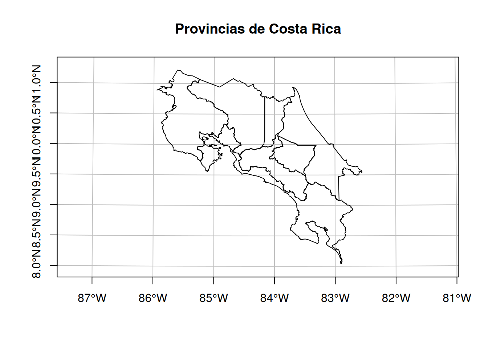
14.2.3.2 Red vial de Costa Rica
Es un archivo GPKG con las líneas de la red vial de Costa Rica en el CRS CR05/CRTM05. Este archivo proviene de un geoservicio de tipo Web Feature Service (WFS) publicado por el Instituto Geográfico Nacional (IGN).
Código para cargar datos de red vial
# Lectura y visualización de datos geoespaciales de la red vial
# Lectura
red_vial <- st_read(
"https://github.com/gf0604-procesamientodatosgeograficos/2026-i/raw/refs/heads/main/datos/ign/red-vial-cr05.gpkg",
quiet = TRUE
)
# Mapa
plot(
red_vial$geom,
xlim = c(280000, 660000),
ylim = c(880000, 1250000),
main = "Red vial de Costa Rica",
axes = TRUE,
graticule = TRUE
)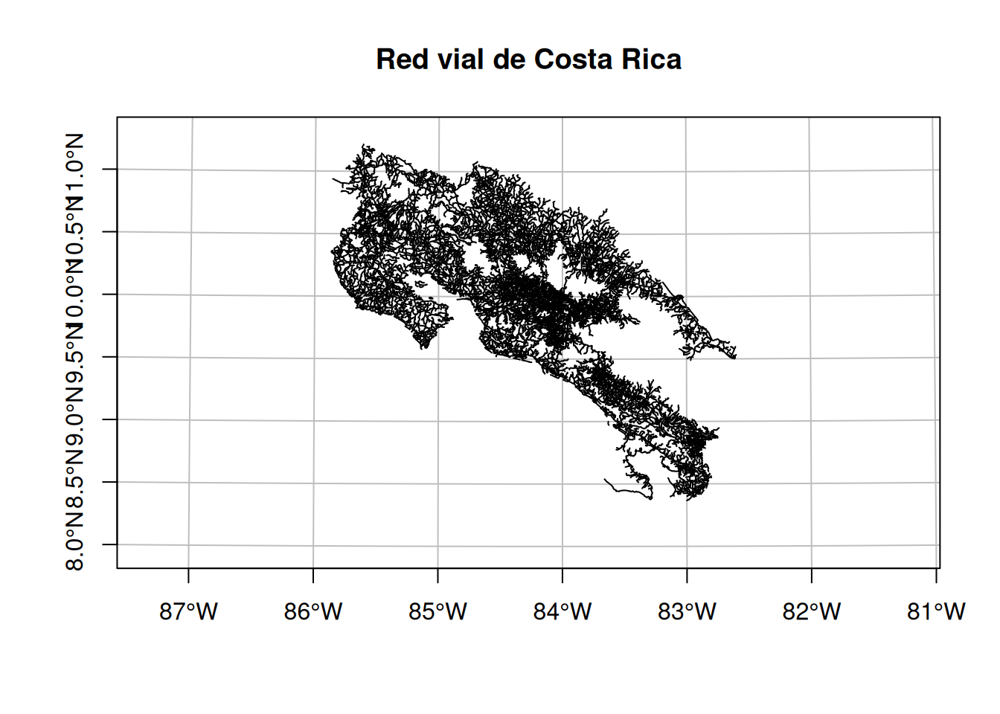
14.2.3.3 Mamíferos de Costa Rica
Es un archivo CSV con registros de presencia de la clase Mammalia de Costa Rica. Este archivo proviene de una consulta al portal de datos de la Infraestructura Mundial de Información en Biodiversidad (GBIF).
Código para cargar datos de mamíferos
# Lectura y visualización de datos geoespaciales de mamíferos
# Lectura
mamiferos <- st_read(
"https://github.com/gf0604-procesamientodatosgeograficos/2026-i/raw/refs/heads/main/datos/gbif/mamiferos.csv",
options = c(
"X_POSSIBLE_NAMES=decimalLongitude", # columna de longitud decimal
"Y_POSSIBLE_NAMES=decimalLatitude" # columna de latitud decimal
),
quiet = TRUE
)
# Asignación del CRS WGS84
st_crs(mamiferos) <- 4326
# Mapa
plot(
mamiferos$geometry,
pch = 16,
main = "Mamíferos de Costa Rica",
axes = TRUE,
graticule = TRUE
)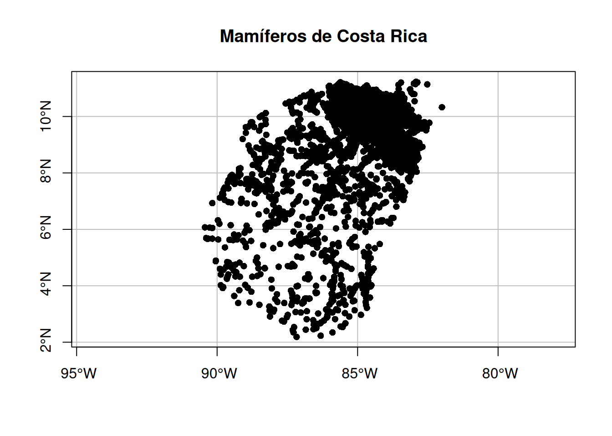
14.3 Introducción
Esta lección brinda una visión general de las operaciones con geometrías en datos vectoriales implementadas en el paquete sf y en datos raster implementadas en el paquete terra. Estas operaciones trabajan con la columna de geometrías (ej. geometry, geom) del paquete sf, para el caso de los datos vectoriales, y con la localización geográfica de los pixeles para el caso de los datos raster. En la sección final, se muestran varias operaciones de interacción entre los modelos raster y vectorial.
14.4 Datos vectoriales
Las operaciones con geometrías en datos vectoriales incluyen:
- Simplificación.
- Centroides.
- Áreas de amortiguamiento (buffers).
14.4.1 Simplificación
La simplificación puede realizarse en geometrías de líneas y polígonos. Reduce la cantidad de memoria, disco y ancho de banda que utilizan las geometrías. Para simplificar geometrías, el paquete sf incluye el método st_simplify(), basado en el algoritmo de Douglas-Peucker, el cual recibe el argumento dTolerance para controlar el nivel de generalización de las unidades del mapa. Este argumento se expresa en las unidades de medida del CRS de la capa, por lo que es conveniente utilizar un CRS con unidades de medida de distancias (ej. metros).
El siguiente bloque de código simplifica la capa de provincias, primero sin preservar su topología y luego preservándola.
# Simplificación de la capa de provincias
# Simplificación sin preservación de topología
provincias_simplificadas <-
provincias |>
st_simplify(dTolerance = 5000, preserveTopology = FALSE)
# Mapa de la capa de provincias con simplificación
# y sin preservación de topología
plot(
provincias_simplificadas$geom,
xlim = c(280000, 660000),
ylim = c(880000, 1250000),
main = "Provincias simplificadas sin preservación de topología",
axes = TRUE,
graticule = TRUE
)# Simplificación con preservación de topología
provincias_simplificadas_topologia <-
provincias |>
st_simplify(dTolerance = 5000, preserveTopology = TRUE)
# Mapa de la capa de provincias con simplificación
# y con preservación de topología
plot(
provincias_simplificadas_topologia$geom,
xlim = c(280000, 660000),
ylim = c(880000, 1250000),
main = "Provincias simplificadas con preservación de topología",
axes = TRUE,
graticule = TRUE
)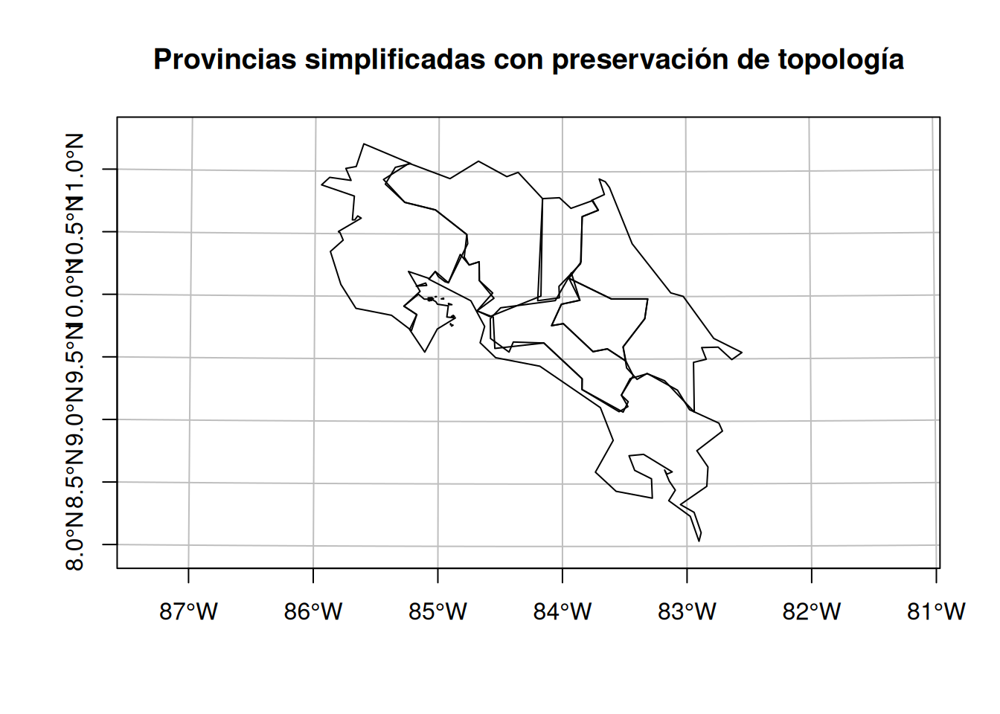
# Tamaño de la capa original
print(object.size(provincias), units = "Kb")12056 Kb# Tamaño de la capa simplificada sin preservación de topología
print(object.size(provincias_simplificadas), units = "Kb")20.8 Kb# Tamaño de la capa simplificada con preservación de topología
print(object.size(provincias_simplificadas_topologia), units = "Kb")62.4 Kb14.4.2 Centroides
Un centroide es un punto que identifica el centro de un objeto geográfico. Puede calcularse para geometrías de líneas y de polígonos y se utilizan para brindar una representación simplificada de geometrías más complejas. Existen varios métodos para calcularlos.
El paquete sf incluye la función st_centroid(), la cual calcula el centroide geográfico (comúnmente llamado “el centroide”). Es posible que el centroide geográfico se ubique fuera de la geometría “padre” (ej. en el caso de una geometría con forma de anillo). Para evitar este resultado, la función st_point_on_surface() se asegura de que el centroide esté siempre dentro de la geometría “padre”.
El siguiente bloque de código calcula los centroides para Costa Rica, mediante las dos funciones mencionadas.
# Costa Rica y sus centroides calculados con
# st_centroid() y st_point_on_surface()
# Mapa de provincias
plot(
st_union(provincias), # unión de los polígonos de provincias
main = "Centroides de CR: st_centroid (rojo) y st_point_on_surface (verde)",
axes = TRUE,
graticule = TRUE
)
# Mapa del centroide calculado con st_centroid()
plot(
st_centroid(st_union(provincias)),
add = TRUE,
pch = 16,
col = "red"
)
# Mapa del centroide calculado con st_point_on_surface()
plot(
st_point_on_surface(st_union(provincias)),
add = TRUE,
pch = 16,
col = "green"
)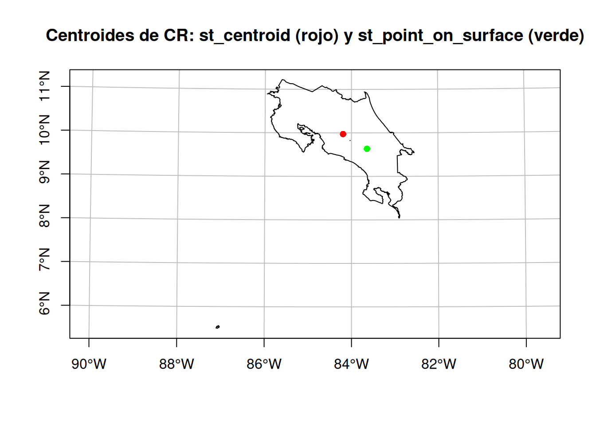
# Coordenadas del centroide calculado con st_centroid()
# CRTM05
st_coordinates(st_centroid(st_union(provincias))) X Y
[1,] 478677.9 1102738# WGS84
st_coordinates(st_transform(st_centroid(st_union(provincias)), crs = 4326)) X Y
[1,] -84.19448 9.97276# Coordenadas del centroide calculado con st_point_on_surface()
# CRTM05
st_coordinates(st_point_on_surface(st_union(provincias))) X Y
[1,] 539373.8 1065146# WGS84
st_coordinates(st_transform(st_point_on_surface(st_union(provincias)), crs = 4326)) X Y
[1,] -83.64124 9.632724El siguiente bloque de código calcula los centroides de las provincias de Costa Rica, mediante las dos funciones mencionadas.
# Provincias de Costa Rica y sus centroides calculados
# con st_centroid() y st_point_on_surface()
# Mapa de provincias
plot(
provincias$geom,
xlim = c(280000, 660000),
ylim = c(880000, 1250000),
main = "Centroides de provincias: st_centroid (rojo) y st_point_on_surface (verde)",
axes = TRUE,
graticule = TRUE
)
# Mapa de los centroides calculados con st_centroid()
plot(
st_centroid(provincias),
add = TRUE,
pch = 16,
col = "red"
)
# Mapa de los centroides calculados con st_point_on_surface()
plot(
st_point_on_surface(provincias),
add = TRUE,
pch = 16,
col = "green"
)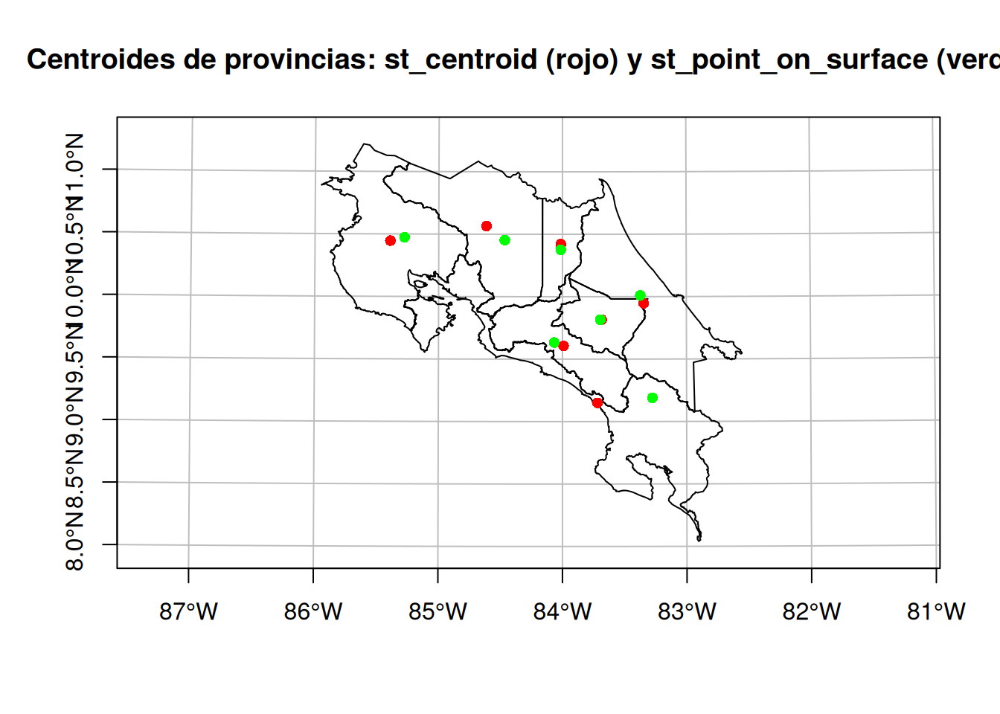
El siguiente bloque de código calcula los centroides para la ruta 32, mediante las dos funciones mencionadas.
# Ruta 32 y sus centroides calculados con st_centroid() y st_point_on_surface()
# Polígonos de San José, Heredia y Limón
sanjose_heredia_limon <-
provincias |>
filter(PROVINCIA == "San José" | PROVINCIA == "Heredia" | PROVINCIA == "Limón")
# Línea de la ruta 32
ruta_32 <-
red_vial |>
filter(num_ruta == "32")
# Mapa de San José, Heredia y Limón
plot(
sanjose_heredia_limon$geom,
main = "Centroides de la ruta 32: st_centroid (rojo) y st_point_on_surface (verde)",
axes = TRUE,
graticule = TRUE
)
# Mapa de la ruta 32
plot(
ruta_32$geom,
add = TRUE,
lwd = 2,
col = "blue"
)
# Mapa del centroide calculado con st_centroid()
plot(
st_centroid(st_union(ruta_32)),
add = TRUE,
pch = 16,
col = "red"
)
# Mapa del centroide calculado con st_point_on_surface()
plot(
st_point_on_surface(st_union(ruta_32)),
add = TRUE,
pch = 16,
col = "green"
)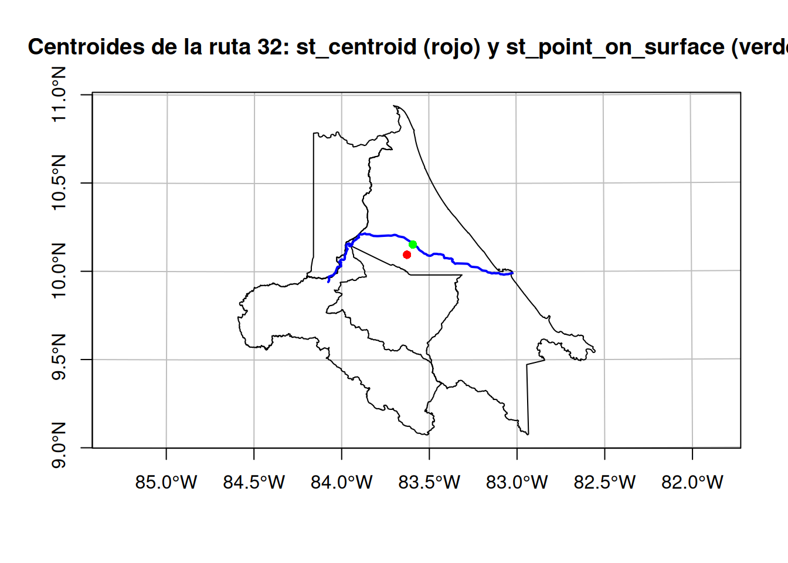
14.4.3 Áreas de amortiguamiento (buffers)
Los buffers son polígonos creados alrededor de otra geometría, ya sea otro polígono, una línea o un punto. El paquete sf incluye la función st_buffer() para la generación de buffers.
# Buffer alrededor de la ruta 32
# Buffer que rodea la ruta 32
plot(
st_buffer(st_union(ruta_32), 5000),
main = "Buffer que rodea la ruta 32",
axes = TRUE,
graticule = TRUE
)
# Línea de la ruta 32
plot(
ruta_32$geom,
col = "blue",
add = TRUE
)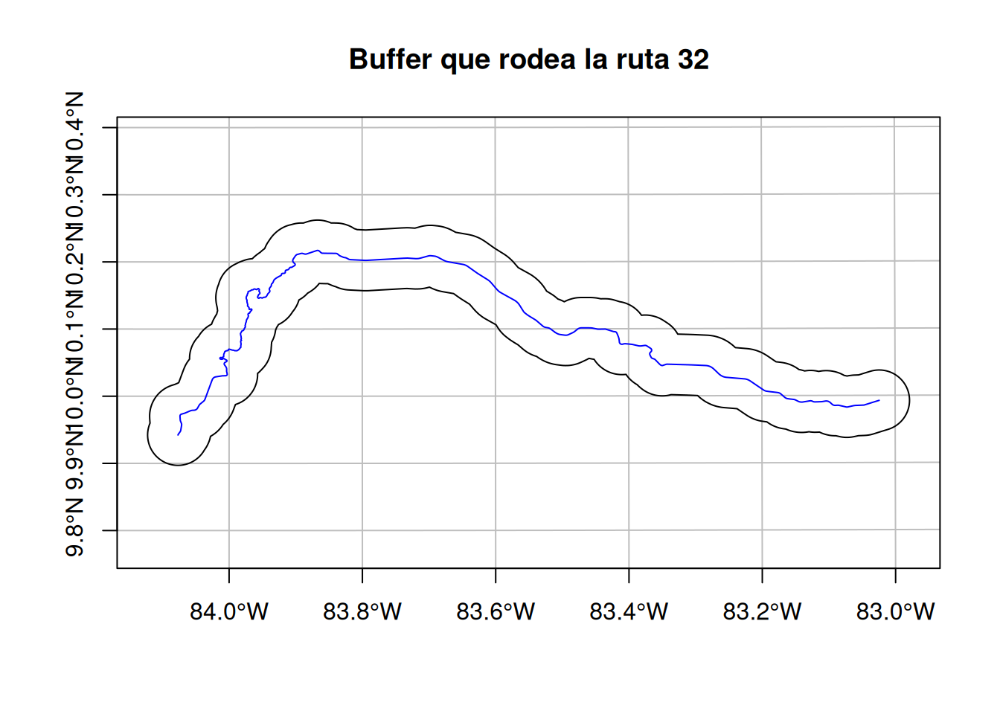
Ejemplo de análisis: especies de mamíferos en riesgo de atropello en las cercanías de la ruta 32
Es común el uso de buffers en análisis de datos, para responder preguntas como, por ejemplo, “¿cuántos puntos hay alrededor de una línea?” o “¿cuáles especies pueden encontrarse en las márgenes de un río?”. En este ejemplo, se utiliza un buffer para identificar las especies de mamíferos en riesgo de ser atropellados en las cercanías de la ruta 32.
# Registros de presencia de mamíferos no voladores ubicados alrededor de la ruta 32
# Registros de presencia de mamíferos no voladores
mamiferos_no_voladores <-
mamiferos |>
filter(taxonRank == "SPECIES" | taxonRank == "SUBSPECIES") |> # para excluir identificaciones a género o superiores
filter(order != "Chiroptera") # se excluyen los murciélagos
# Línea de la ruta 32
ruta_32 <-
red_vial |>
filter(num_ruta == "32") |>
st_transform(4326)
# Buffer de la ruta 32
buffer_ruta_32 <-
ruta_32 |>
st_buffer(dist = 5000) |>
st_transform(4326)
# Registros de presencia dentro del buffer
mamiferos_buffer_ruta_32 <-
st_join(mamiferos_no_voladores, buffer_ruta_32) |>
filter(!is.na(codigo))
# Mapa
plot(
st_union(buffer_ruta_32),
main = "Registros de presencia de mamíferos terrestres alrededor de la ruta 32",
axes = TRUE,
graticule = TRUE
)
# Ruta 32
plot(
ruta_32$geom,
col = "blue",
add = TRUE
)
# Mamíferos
plot(
mamiferos_buffer_ruta_32,
pch = 16,
col = "orange",
add = TRUE
)Warning in plot.sf(mamiferos_buffer_ruta_32, pch = 16, col = "orange", add =
TRUE): ignoring all but the first attribute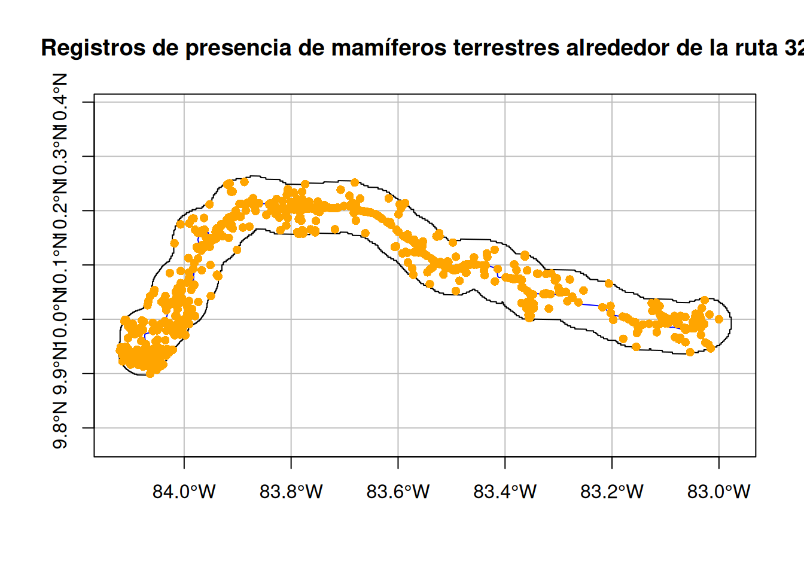
Lista de especies y cantidad de registros de presencia:
# Lista de especies
lista_especies <-
mamiferos_buffer_ruta_32 |>
st_drop_geometry() |>
filter(!is.na(species) & species != "") |>
group_by(species) |>
summarise(registros = n()) |>
arrange(desc(registros)) |>
rename(especie = species)
# Tabla
lista_especies |>
datatable(options = list(
pageLength = 10,
language = list(url = '//cdn.datatables.net/plug-ins/1.10.11/i18n/Spanish.json')
))Mapa interactivo:
# Crear columna con el enlace a los detalles del registro original
mamiferos_buffer_ruta_32 <- mamiferos_buffer_ruta_32 |>
mutate(
registro = paste0(
"<a href='", occurrenceID,
"' target='_blank'>Detalle del registro</a>"
)
)
# Especificar el modo interactivo
tmap_mode("view")
# Definir el mapa
mapa <-
# Capas base
tm_basemap(c("OpenStreetMap", "Esri.WorldImagery")) +
# Buffer (polígono)
tm_shape(buffer_ruta_32, name = "Buffer") +
tm_polygons(col = "lightblue", alpha = 0.3,
border.col = "blue", lwd = 2) +
# Ruta 32 (línea)
tm_shape(ruta_32, name = "Ruta 32") +
tm_lines(col = "red", lwd = 2) +
# Mamíferos (puntos)
tm_shape(mamiferos_buffer_ruta_32, name = "Mamíferos") +
tm_dots(
size = 0.5,
fill = "red",
id = "species",
popup.vars = c(
"Localidad" = "locality",
"Fecha" = "eventDate",
"Fuente" = "institutionCode",
"Registro" = "registro" # enlace al detalle del registro de presencia
),
popup.format = list(html.escape = FALSE) # para hacer "clicables" los enlaces HTML
) +
# Definir la escala gráfica
tm_scalebar(position = c("left", "bottom"))
# Mostrar el mapa
mapa14.5 Datos raster
14.5.1 Extracción de valores raster
La extracción de valores raster es el proceso de identificar y retornar los valores asociados con una capa raster en localizaciones específicas, generalmente determinadas por objetos vectoriales, ya sean puntos, líneas o polígonos. En el paquete terra, la extracción se implementa a través de la función extract().
# Cargar datos de temperatura media anual
temperatura <- rast(
"https://github.com/gf0604-procesamientodatosgeograficos/2026-i/raw/refs/heads/main/datos/worldclim/temperatura.tif"
)
# Desplegar datos
plot(temperatura)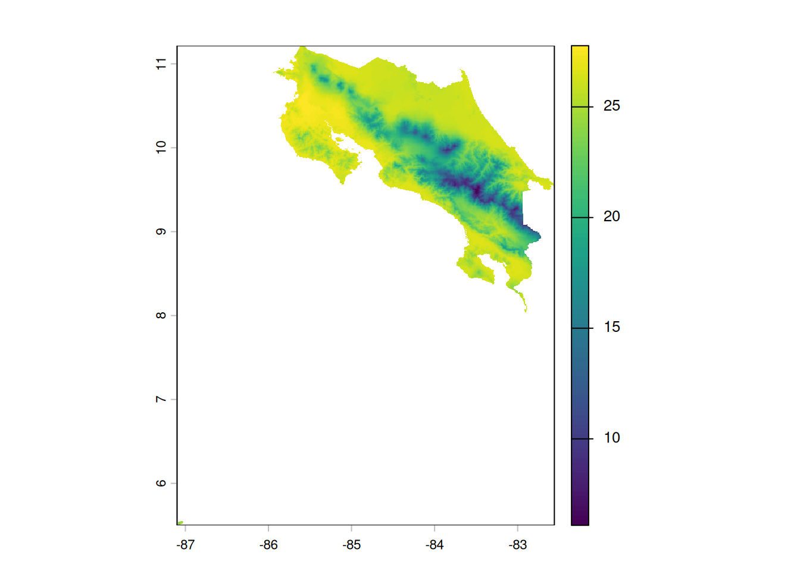
Rangos de temperaturas de especies
El siguiente bloque de código obtiene los rangos de temperatura media anual del mono congo (Alouatta palliata):
# Filtrado de registros de congos
congos <-
mamiferos |>
filter(species == "Alouatta palliata")
# Columna con la temperatura de cada registro de congos con base en la capa raster de altitud
congos$temperatura <- terra::extract(temperatura, congos)
# Temperatura promedio del hábitat del congo
temperatura_congo_promedio <- mean(congos$temperatura$temperatura, na.rm = TRUE)
# Temperatura mínima del hábitat del congo
temperatura_congo_minima <- min(congos$temperatura$temperatura, na.rm = TRUE)
# Temperatura máxima del hábitat del congo
temperatura_congo_maxima <- max(congos$temperatura$temperatura, na.rm = TRUE)El siguiente mapa muestra el rango de temperatura del mono congo:
# Crear una máscara con TRUE en celdas dentro del rango
rango_temperatura_congo <- temperatura >= temperatura_congo_minima & temperatura <= temperatura_congo_maxima
# Aplicar la máscara al raster de temperatura
mapa_rango_temperatura_congo <- mask(temperatura, rango_temperatura_congo, maskvalue = 0)
# Crear paleta de rojos
paleta_rojos <- colorRampPalette(c("blue", "yellow", "red"))
# Visualizar solo las celdas dentro del rango
plot(
mapa_rango_temperatura_congo,
col = paleta_rojos(100),
xlim = c(-86.0, -82.3),
ylim = c(8.0, 11.3),
main = "Rango de temperatura del mono congo"
)
# Registros de presencia de congos
plot(congos,
add = TRUE,
pch = 20,
col = "black",
cex = 0.7
)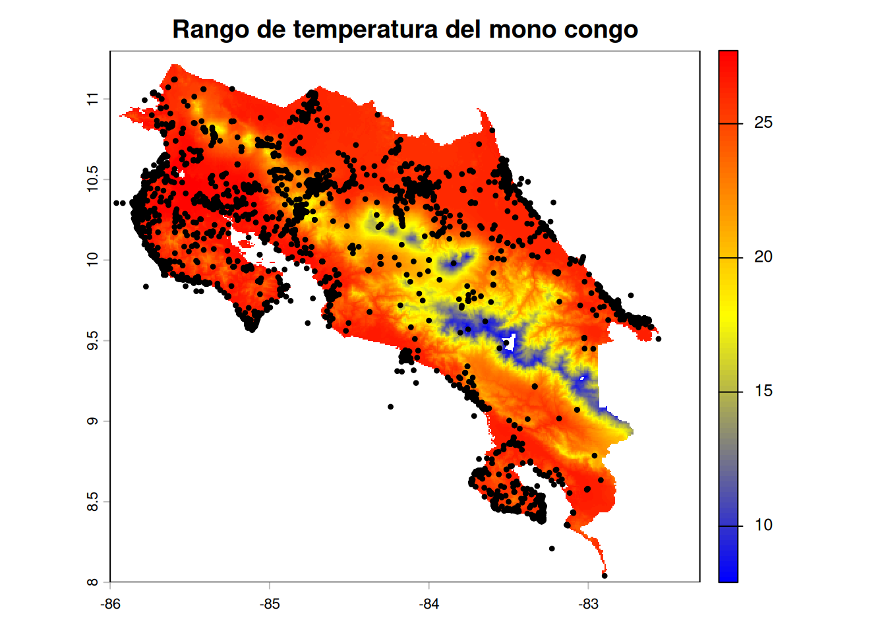
Ejercicios
Obtenga el rango de precipitación anual para el mono congo y genere el mapa correspondiente. Use los datos de precipitación en https://github.com/gf0604-procesamientodatosgeograficos/2026-i/raw/refs/heads/main/datos/worldclim/precipitacion.tif.
Genere los mapas de rangos de temperatura y precipitación para la musaraña del Chirripó (Cryptotis gracilis).